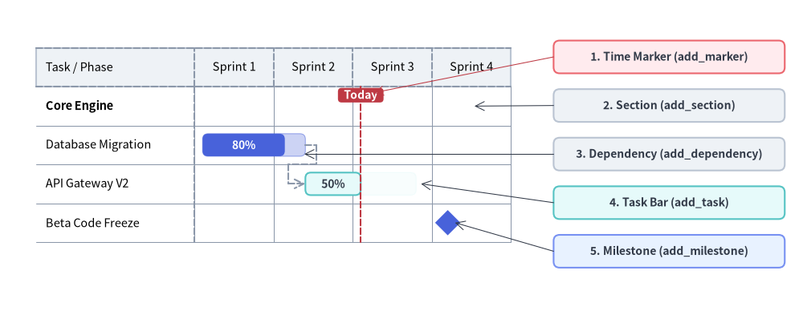
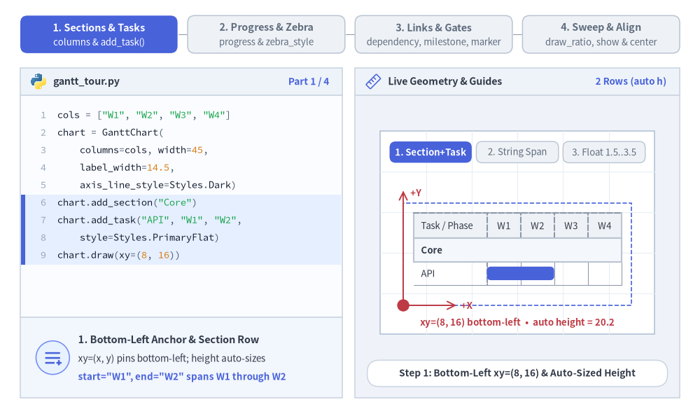
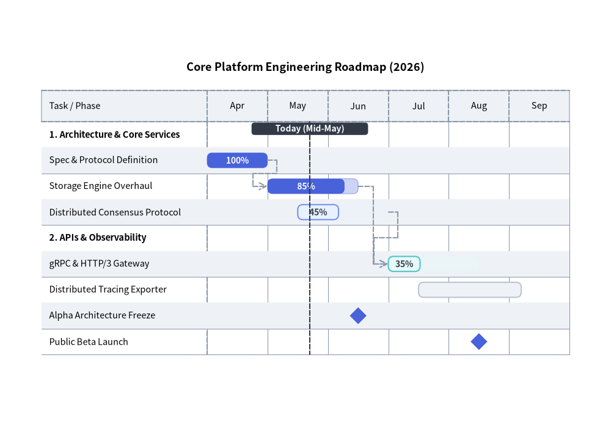
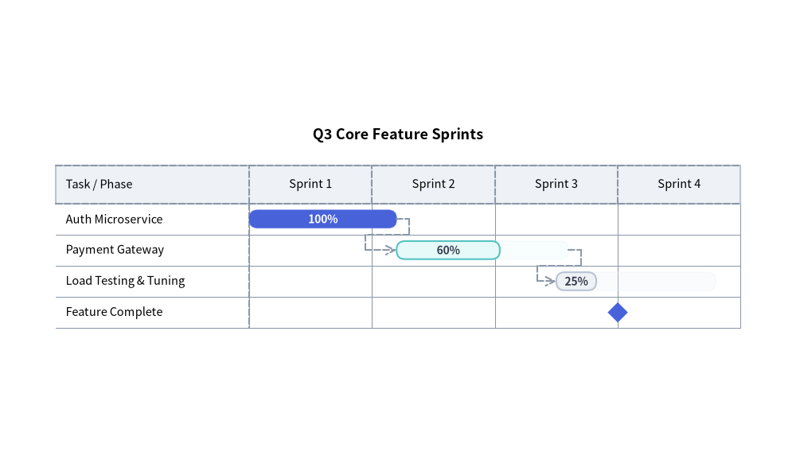

Gantt Chart（ガントチャート）：プロジェクトロードマップ・マイルストーン・依存関係
GanttChart（drawlib.charts.gantt）は、宣言的で高品質なベクター形式のプロジェクトロードマップ、スプリントスケジュール、マイルストーンタイムラインを提供します。横方向（X 軸）にタイムライン区間が並び、縦方向（Y 軸）にセクション区切りバナー、タスク行、マイルストーンが上から下へと順番に積み重なります。

Source Code
from drawlib.canvas import save, setup
from drawlib.charts.gantt import GanttChart
from drawlib.lines import line
from drawlib.shapes import rectangle
from drawlib.styles import Styles
setup(width=132, height=52)
chart = GanttChart(
columns=["Sprint 1", "Sprint 2", "Sprint 3", "Sprint 4"],
axis_line_style=Styles.MutedDashed,
axis_text_style=Styles.Black.patch(text_size=10.5),
grid_style=Styles.MutedThin,
header_style=Styles.Neutral,
progress_text_style=Styles.WhiteBold.patch(text_size=10.0),
width=82.0,
label_width=26.0,
header_height=6.4,
row_height=6.4,
bar_radius=0.9,
)
chart.add_section("Core Engine", text_style=Styles.BlackBold.patch(text_size=10.5))
t1 = chart.add_task("Database Migration", start=0.1, end=1.4, style=Styles.PrimaryFlat, progress=0.8)
t2 = chart.add_task(
"API Gateway V2",
start=1.4,
end=2.8,
style=Styles.SecondaryNeutral,
progress=0.5,
progress_text_style=Styles.DarkBold.patch(text_size=10.0),
)
chart.add_milestone("Beta Code Freeze", at=3.2, style=Styles.PrimaryFlat)
chart.add_dependency(t1, t2)
chart.add_marker(at=2.1, style=Styles.DangerDashed, label="Today", label_style=Styles.WhiteBold.patch(text_size=10.0))
chart.draw(xy=(4.0, 8.0))
# Compute exact row Y coordinates from chart.get_size()
_, chart_h = chart.get_size()
rows_top = 8.0 + chart_h - 2.0 - chart.header_height
row_cy = [rows_top - (i + 0.5) * chart.row_height for i in range(4)]
# Structural Callout Annotations on the Right
callouts = [
(42.5, "1. Time Marker (add_marker)", Styles.DangerNeutral),
(34.5, "2. Section (add_section)", Styles.Neutral),
(26.5, "3. Dependency (add_dependency)", Styles.Neutral),
(18.5, "4. Task Bar (add_task)", Styles.SecondaryNeutral),
(10.5, "5. Milestone (add_milestone)", Styles.PrimaryNeutral),
]
for cy, label_txt, box_style in callouts:
rectangle(
(110.0, cy),
width=38.0,
height=5.4,
style=box_style.patch(shape_r=1.0),
text=label_txt,
text_style=Styles.DarkBold.patch(text_size=10.0),
)
line((91.0, 42.5), (61.4, rows_top - 1.0), arrow_head="->", style=Styles.DangerThin)
line((91.0, 34.5), (78.0, row_cy[0]), arrow_head="->", style=Styles.DarkThin)
line((91.0, 26.5), (50.0, row_cy[1] - 1.5), arrow_head="->", style=Styles.DarkThin)
line((91.0, 18.5), (69.2, row_cy[2]), arrow_head="->", style=Styles.DarkThin)
line((91.0, 10.5), (74.8, row_cy[3]), arrow_head="->", style=Styles.DarkThin)
save()
1. 基本概念と基本的な使い方
GanttChart は順序付きの columns に沿って横向きのタイムラインロードマップを構築します。デフォルトで左下 (x, y) を基準にアンカーし（align="center" で中央揃えも可）、height=None の場合は登録された行数からコンテナの height を自動算出します。列名または浮動小数点オフセットを使って .add_section(...) バナー配下に .add_task(...) バーをグループ化できるほか、2 トーンの進捗率塗り分け（progress）や交互の行ストライプ（zebra_style）、.add_dependency(...) 矢印、.add_milestone(...) ひし形マーカー、.add_marker(...) 基準線、さらに draw_ratio と show による部分描画アニメーションをサポートしています。

- セクション・タスク・時間インデックス指定（
columns,add_task,xy）: スケジュールを左下xyにアンカーし（height=Noneの場合は行数から高さを自動算出）、列名文字列（"W1"）または浮動小数点オフセット（1.5..3.5）でstart/endを指定します。 - 2 トーンの進捗表示とゼブラストライプ（
progress,zebra_style）:progress（0.0〜1.0）とprogress_text_styleラベルで濃淡 2 トーンの完了バーを描画し、header_styleと交互の行背景zebra_styleでスケジュール表を整えます。 - 依存関係・マイルストーン・マーカー（
add_dependency,add_milestone,add_marker）: タスク間の直交 End-to-Start 矢印、専用行のひし形リリースゲート、および全高を貫く基準線（"Now"など）を重ねて描画できます。 - 部分スイープと連動表示切替（
draw_ratio,show,align）:draw_ratioでバーの伸長をアニメーション化したり、行スロットを維持しつつ関連する依存矢印も自動的に隠すtask.show = Falseを切り替えたり、draw(xy, align="center")で中央配置したりできます。
2. 依存関係付きのエンジニアリング・リリースロードマップ
次の例では、セクション分割、進捗インジケータ付きタスク、マイルストーン、直交ルーティングによる依存関係矢印、および垂直の "Today" マーカーを組み合わせています。
from drawlib.canvas import save, setup
from drawlib.charts.gantt import GanttChart
from drawlib.styles import Styles
setup(width=118, height=85)
chart = GanttChart(
columns=["Apr", "May", "Jun", "Jul", "Aug", "Sep"],
axis_line_style=Styles.MutedDashed,
axis_text_style=Styles.Black.patch(text_size=10.5),
grid_style=Styles.MutedThin,
header_style=Styles.Neutral,
zebra_style=Styles.NeutralFlat,
progress_text_style=Styles.WhiteBold.patch(text_size=10.0),
width=106.0,
label_width=32.0,
title="Core Platform Engineering Roadmap (2026)",
title_style=Styles.BlackBold.patch(text_size=13.0),
header_height=6.0,
row_height=5.0,
bar_radius=1.0,
)
# 1. Core Services Section
chart.add_section("1. Architecture & Core Services", text_style=Styles.BlackBold.patch(text_size=10.5))
t1 = chart.add_task("Spec & Protocol Definition", start="Apr", end=1.0, style=Styles.PrimaryFlat, progress=1.0)
t2 = chart.add_task("Storage Engine Overhaul", start=1.0, end=2.5, style=Styles.PrimaryFlat, progress=0.85)
t3 = chart.add_task(
"Distributed Consensus Protocol",
start=1.5,
end=3.0,
style=Styles.PrimaryNeutral,
progress=0.45,
progress_text_style=Styles.DarkBold.patch(text_size=10.0),
)
# 2. APIs & Observability Section
chart.add_section("2. APIs & Observability", text_style=Styles.BlackBold.patch(text_size=10.5))
t4 = chart.add_task(
"gRPC & HTTP/3 Gateway",
start=3.0,
end=4.5,
style=Styles.SecondaryNeutral,
progress=0.35,
progress_text_style=Styles.DarkBold.patch(text_size=10.0),
)
t5 = chart.add_task("Distributed Tracing Exporter", start=3.5, end=5.2, style=Styles.Neutral, progress=0.0)
# 3. Milestones, Dependencies & Today Marker
chart.add_milestone("Alpha Architecture Freeze", at="Jun", style=Styles.PrimaryFlat)
chart.add_milestone("Public Beta Launch", at=4.5, style=Styles.PrimaryFlat)
chart.add_dependency(t1, t2)
chart.add_dependency(t2, t4)
chart.add_dependency(t3, t4)
chart.add_marker(at=1.7, style=Styles.DarkDashed, label="Today (Mid-May)", label_style=Styles.WhiteBold.patch(text_size=10.0))
chart.draw(xy=(6.0, 10.0))
save()

3. 時間座標の指定方法とアジャイル・スプリントスケジュール
GanttChart では、時間座標（start、end、at）を次のいずれかの方法で指定できます。
- 列名文字列:
columns内の文字列と完全一致させます（start="Apr"は"Apr"列の左端、end="Apr"は"Apr"列の右端、at="Jun"は"Jun"列の中央に解決されます）。 - 浮動小数点オフセット:
0.0が列0の左端、1.0が列0と列1の境界、1.5が列1の中央を表します。
from drawlib.canvas import save, setup
from drawlib.charts.gantt import GanttChart
from drawlib.styles import Styles
setup(width=115, height=66)
chart = GanttChart(
columns=["Sprint 1", "Sprint 2", "Sprint 3", "Sprint 4"],
axis_line_style=Styles.MutedDashed,
axis_text_style=Styles.Black.patch(text_size=10.5),
grid_style=Styles.MutedThin,
header_style=Styles.Neutral,
progress_text_style=Styles.WhiteBold.patch(text_size=10.0),
width=103.0,
label_width=28.0,
title="Q3 Core Feature Sprints",
title_style=Styles.BlackBold.patch(text_size=13.0),
bar_radius=1.2,
)
s1 = chart.add_task("Auth Microservice", start=0.0, end=1.2, style=Styles.PrimaryFlat, progress=1.0)
s2 = chart.add_task(
"Payment Gateway",
start=1.2,
end=2.6,
style=Styles.SecondaryNeutral,
progress=0.6,
progress_text_style=Styles.DarkBold.patch(text_size=10.0),
)
s3 = chart.add_task(
"Load Testing & Tuning",
start=2.5,
end=3.8,
style=Styles.Neutral,
progress=0.25,
progress_text_style=Styles.DarkBold.patch(text_size=10.0),
)
chart.add_dependency(s1, s2)
chart.add_dependency(s2, s3)
chart.add_milestone("Feature Complete", at=3.0, style=Styles.PrimaryFlat)
chart.draw(xy=(6.0, 12.0))
save()

4. API リファレンス
コンストラクタ（GanttChart）
すべてのコンストラクタ引数はキーワード専用引数（*）です。
from drawlib.charts.gantt import Dependency, DrawDirection, GanttChart, Marker, Milestone, Section, Task
chart = GanttChart(
*,
columns: list[str],
axis_line_style: Style,
axis_text_style: Style | None = None,
header_style: Style | None = None,
grid_style: Style | None = None,
zebra_style: Style | None = None,
progress_text_style: Style | None = None,
background_style: Style | None = None,
title: str = "",
title_style: Style | None = None,
width: float = 90.0,
height: float | None = None,
row_height: float = 4.5,
header_height: float = 5.5,
label_width: float = 24.0,
bar_radius: float = 0.8,
)
| パラメータ | 型 | デフォルト | 説明 |
|---|---|---|---|
columns |
list[str] |
必須 | 上部ヘッダー帯に沿った順序付きのタイムライン区間名リスト（最低 1 要素が必須）。 |
axis_line_style |
Style |
必須 | ヘッダー枠線および列区切り目盛りに用いる必須アンカースタイル。 |
axis_text_style |
Style | None |
None |
列ヘッダー名および左列の行ラベルのスタイル。None の場合は省略されます。 |
header_style |
Style | None |
None |
上部タイムラインヘッダー帯の背景カードスタイル。None の場合は背景塗りが省略されます。 |
grid_style |
Style | None |
None |
各行を縦断する垂直タイムライン列区切り線のスタイル。None の場合は省略されます。 |
zebra_style |
Style | None |
None |
1 行おきに描画される水平ゼブラストライプ背景のスタイル。None の場合は省略されます。 |
progress_text_style |
Style | None |
None |
progress > 0 のタスクに描画される完了率ラベル（"85%" など）のデフォルトスタイル。 |
background_style |
Style | None |
None |
チャート外枠の背景カードのスタイル。None の場合は省略されます。 |
title |
str |
"" |
コンテナ上部に描画されるチャートタイトル文字列。 |
title_style |
Style | None |
None |
title のタイポグラフィスタイル。タイトルを描画するには必須です。 |
width |
float |
90.0 |
キャンバス単位でのチャート全体のバウンディングボックス幅。 |
height |
float | None |
None |
チャート全体のバウンディングボックス高さ。None （デフォルト） の場合、header_height + len(items) * row_height から動的に自動算出されます（最小 20.0）。 |
row_height |
float |
4.5 |
タスク、セクション、またはマイルストーン 1 行あたりに割り当てられる垂直高さ。 |
header_height |
float |
5.5 |
上部列ヘッダー帯の高さ。 |
label_width |
float |
24.0 |
左側のタスク／マイルストーン名カラムに確保される水平幅。 |
bar_radius |
float |
0.8 |
タスクバーの角丸半径（task.style.shape_r が None の場合に適用）。 |
メソッドとプロパティ
add_section(name: str, style: Style | None = None, text_style: Style | None = None, *, show: bool = True) -> Section: カテゴリ区切りのセクション行を末尾に追加し、変更可能なSectionインスタンスを返します（styleはバナー矩形の塗り・枠線を上書きし、text_styleはセクションタイトルに対してchart.axis_text_styleを上書きします）。add_task(name: str, start: str | float, end: str | float, style: Style, progress: float = 0.0, progress_text_style: Style | None = None, *, show: bool = True, draw_ratio: float = 1.0, draw_direction: DrawDirection = "left_to_right") -> Task: スケジュールされたタスクバー行を末尾に追加し、変更可能なTaskインスタンスを返します。progress:[0.0, 1.0]にクランプされる完了率。progress > 0の場合、予定期間全体がstyleの塗り色の半透明ティント（alpha=0.28）で描画され、完了部分（progress * width）が不透明なstyleで描画されます。progress_text_style: タスク単位での完了率ラベルのタイポグラフィ上書き（未指定時はchart.progress_text_styleにフォールバックします）。draw_ratio&draw_direction: 部分空間レンダリング制御（"left_to_right"はstartからendに向かって水平にバーを伸ばし、"bottom_to_top"はバーの下端から垂直方向に成長させます）。
add_milestone(name: str, at: str | float, style: Style, *, show: bool = True) -> Milestone: 時刻atにひし形マーカーを配置したマイルストーン行を末尾に追加し、変更可能なMilestoneインスタンスを返します。add_marker(at: str | float, style: Style, label: str = "", label_style: Style | None = None, *, show: bool = True) -> Marker: 時刻atに全高の垂直基準線（および任意のピル型上部バッジlabel+label_style）を追加し、変更可能なMarkerインスタンスを返します。add_dependency(from_task: Task, to_task: Task, style: Style | None = None, *, show: bool = True) -> Dependency:from_taskからto_taskへの直交依存矢印を追加し（style=Noneの場合はchart.axis_line_styleにフォールバック）、変更可能なDependencyインスタンスを返します。from_task.show、to_task.show、またはdep.showがFalseの場合（あるいはいずれかのタスクのdraw_ratio <= 0.0の場合）は自動的に非表示になります。get_size() -> tuple[float, float]:(width, height)を返します。chart.height is Noneの場合は登録済み行数からheightを動的に算出します。draw(xy: tuple[float, float] = (0.0, 0.0), *, width: float | None = None, height: float | None = None, align: Literal["bottom_left", "center"] = "bottom_left", scale: float = 1.0) -> None: 左下xyを基準（align="center"の場合はxyを中心）としてガントチャートを描画します。一時的な寸法上書きや均一なscaleにも対応しています。- プロパティ:
chart.columns -> list[str]: タイムライン列ラベルのコピーを返します。chart.items -> list[Task | Section | Milestone]: 登録済みのスケジュール行を上から下の順序で格納したコピーを返します。chart.markers -> list[Marker]: 登録済みの垂直マーカーのコピーを返します。chart.dependencies -> list[Dependency]: 登録済みの依存関係コネクタのコピーを返します。